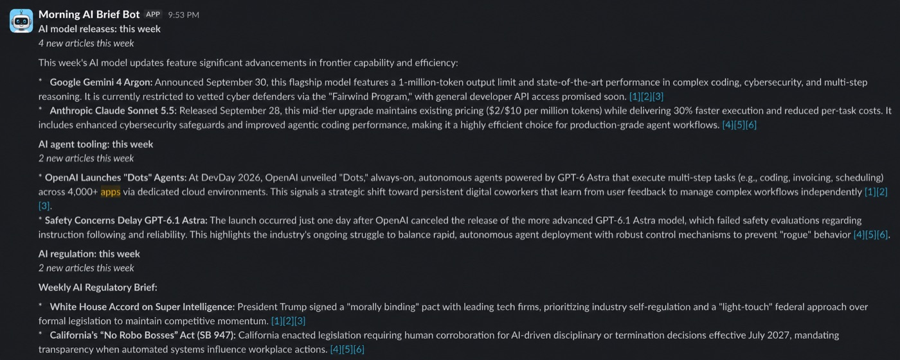
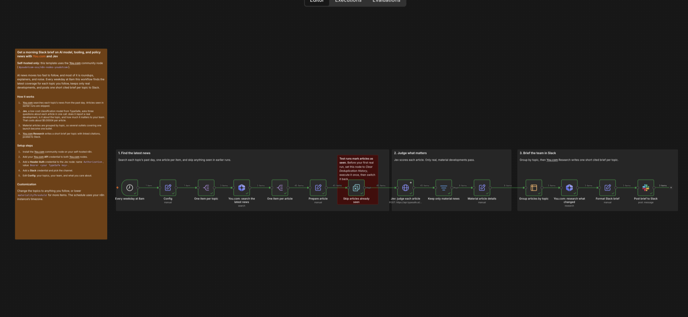

Read everything, post almost nothing.
A morning AI news brief for n8n that reads every article it finds and posts only the real developments. You.com finds and writes. TypeSafe's Jev decides what's worth your attention.

AI news moves faster than anyone can read. On a normal weekday, a search for "AI model releases news" returns forty results, and most of them aren't news. They're roundups of last week, release trackers, explainers, listicles, and topic pages that list everything at once.
A morning brief that forwards all of that gets muted by Wednesday. So the job was never "summarize more." It's "read all of it, every day, and only speak up when something actually happened."
This post covers what the workflow does, why it's built the way it is, and what we learned tuning it on eight weeks of real articles.
01 · WhatOne workflow, three moves.
Every weekday at 8am, for each topic you follow, the workflow finds the latest coverage, decides which articles report something real, and writes one short cited brief for Slack.
The judgment step is three narrow questions, asked about each article in a single call:
- Does it report one specific new development? A yes or no, with a probability.
- Is it about this topic? Another yes or no.
- How much does it matter to your team? A score from noise to material.
The workflow posts an article only when all three clear their thresholds. Articles that pass are grouped by topic, so five outlets covering one model launch become one bullet, and You.com Research writes the brief with linked citations.

02 · WhyTwo engines that each do half the job.
Retrieval has to be fresh
A brief about yesterday needs yesterday's sources. A language model's knowledge stops at its training date, so the workflow starts with You.com Search, which returns live results with publication dates. The same API writes the brief at the end, citing the articles it read.
Judgment has to be cheap enough to run on everything
The filter is only useful if it reads every article, not a sample. Jev scores one for about $0.00004, so reading forty results per topic costs a fraction of a cent. Sending every one of them to a research call instead would cost about two hundred times more.
Decisions should come with a confidence
Jev doesn't return prose to parse. It returns a probability for each yes-or-no question and a score for materiality, each with a confidence. That makes the policy explicit: a threshold in the workflow, not a sentence in a prompt.
03 · HowTuning it on eight weeks of real news.
A filter like this is easy to demo and hard to trust. To pick the thresholds, we collected 674 articles from eight one-week windows across three topics, using the template's exact search, and scored every one with the template's exact Jev request.
Then we labeled 160 of them by hand, "belongs in the brief" or not, without looking at Jev's scores. We chose thresholds using the first four weeks and checked them on the last four, which weren't used for tuning.
Read everything, show almost nothing
8 weeks · 3 topics · $0.03 of Jev for all 674
One narrow question does most of the work
The first version asked Jev mostly one thing: how much does this matter? That's the question that feels right, and it was the wrong one to lead with. Roundups and trackers mention lots of important news, so they score as important.
share of posts that were real news, labeled sample, weighted to all articles
Asked alone, materiality posts about three junk items for every real one. Adding a single narrow question, "does this page report one specific new development?", with examples of what doesn't count, lifts that to 80%. Breaking a fuzzy judgment into atomic questions is the core advice in TypeSafe's own guide, and this is what it looks like in numbers.
Stricter thresholds, far fewer mistakes
original thresholds
shipped thresholds
Raising the cutoffs from 0.6 / 0.6 / 1.5 to 0.8 / 0.8 / 1.3 cut wrong posts by more than four times. On the held-out weeks, the share of posts that were real news rose from 74% to 89%. It cost one story: 18 of 23 real stories still made it into a brief, down from 19.
What it misses is mostly small launches, like a niche agent tool or a research model. Jev rates them as real but not important to a team building AI products, which is a fair call for a morning brief.
What didn't make the cut
- A URL filter. Dropping topic and section pages by URL removed 17 of 45 articles before Jev, but every one of them was a page Jev was already rejecting. The briefs came out identical, so it wasn't worth a node.
- Rewording the question. Naming roundups and release notes explicitly helped at the old thresholds, but at the new ones it gained one point of precision and lost a story.
Things testing caught that a demo wouldn't
- Encyclopedia pages looked like news. Wikipedia and funding-database pages were updated recently and described real events, so they passed until the "one new development" question named them as examples of what doesn't count.
- One launch became seven alerts. Big news gets covered by many outlets. Grouping by topic before writing the brief turned seven posts about one court ruling into one bullet.
- A model name drifted. One early brief wrote "Claude 3.5 Sonnet" for an article about Sonnet 5.5. The research prompt now asks to keep product names exactly as the articles give them.
04 · Where This GoesPoint it at anything you follow.
Nothing in the workflow is specific to AI news. The topics, the team description, and what the team cares about all live in one Config node. Change them and the same three questions judge a different stream: regulatory changes in your industry, a technology you're evaluating, or anything with a steady flow of noisy coverage.
The pattern travels further than n8n, too. Retrieve with a search API, judge with a decision model, and keep the policy in thresholds you can see and change. It's the same shape as You.com's security-advisory triage agent, applied to a different daily flood.
The workflow, the evaluation data, and the scripts are on GitHub.